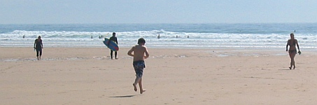

J'fûmes invités l'aut' jour, Lonore et mé, d'allé bethe du tée et passé l'arlevée a la Rocque, siez eunne couosinne a mé, qu'est là, dans un p'tit cottage, souos les soins du docteu. Not' couosinne ne s'trouve pon trop l'tcheu lis bat niet et jour, ses poumons sont pliens d'vent, et ou n'peut monté les d'grès qu'un pid a la faie. Ch'est-tan-tchi, l'docteu lis r'gardi la langue d'sus et d'sous, lis tappi sus l'dos avec un manche de couté, et la fit èscopi dans eunne tassée.
"J'vé bin ch'qu'ous avez," qui dit après avé fait un cartchulle sus eunne fielle de papi, ch'est eunne attaque de doublye ponç'cresse. Ch'est tchinze jours au bord d'la mé, qui vos faut. Ou mang'rez quand ous éthez faim, ou dormithez la bouoche freummée; assiev'ous quand ou s'ez lassée, et invitez vot' couosinne Laizé Pain de v'nin vos distraithe!"
Ch'est d'même que j'nos y trouvimes l'aut' arlevée. J'trouvimes là eunne jeune veuve ov sa fille qu'était a s'pratitchi sus un tas d'patrons d'dentelle de tchi nou r'ouitha pâslé au Highstedford de ch't'hivé.
Quand Lonore m'eut promins d'resté bin trantchille assise sus la grève souos les soins d'la veuve (qui m'promins d'avé l'yi sus m'n'èsfant), j'resti toute seule avec ma couosinne. I' s'adounnait que j'taimes assises souos un fidgi qui n'avait pon d'figons, et j'en profiti pour tchéstchounné la malade sus sa maladie, et s'ou s'santait prête, au cas qu'l'affaithe touon'nait au piethe, a dèslouogi pour allé dans un monde meilleur!
"Dèslouogi d'ichin!" qu'ou s'fit, "J'sis bin ichin, et j'ai prins l'cottage pour un mais! pourtchi qu'tu m'pasle de dèsmenagi?"
J'vi bin qu'ou n'compronnait pas que ch'tait du grand et dernié dèsmenag'ment de tchi que j'pâlais, ch'est-tan-tchi j'me mint a lis liethe un chapitre de Job pour tâchi d'la mettre au m'zéspé. Che n'fut qu'au quatrième chapitre qu'ou s'mint a plieuthé (oul a prétendu d'pis que ch'tait d'ennyi de m'oué ronchounné).
Tout d'un coup v'la des cris perchants qui nos vennent du bord de la grève. Ma fille! que j'criyi: ma fille dans la djeulle du lion! et j'renverse livre, tchaise, et couosinne, dans ma hâte pour tcheurre la sauvé d'la main des philistins!
N'y'avait pas l'moindre philistin en veue. Ch'tait Lonore qu'avait voulu s'bognyé! Quand je d'valli l'Slip, oul tait là, dans l'ieau jusqu'au g'nou, moniéthment enfliubée dans chinq ou siez gazettes amathées ov de la corde - et touos ses habits qui s'n'allaient en drive du bord de Gouorét! La veuve et sa fille avaient 'té si otchupées a faithe lus crochet qui n's'étaient apperchus d'rin!
J'en eut les sangs quazi touonnées! Vite, j'fit ramonté Lonore au cottage; j'l'habillyi d'man mus ov eunne partie d'mes habits et tchiq'chose de blianc que m'prêti ma couosinne - et j'nos en vinmes siez nous par le préchain train, dans la carosse ès bagages.
Mais tchi peux qu'j'eut! Et chutte Lonore qui riait tout l'temps en faisant des sinnes au mécanicien! Sans compté tout chu bouon linge brodé et un neu cors qu'est tout hort s'èschoué p't'être a la Grande Avarison!
J'n'en ai oquo rin dit a Piteur! J'ai peux qui n'mé diche que j'sis eunne bachouarde qui n'sais pon tant seulment vilyi sus sa fille! Mais, étout, Lonore est tchiq' fais si èsprouvante.
Laizé Pain
Morning News 17/7/1913
Viyiz étout: